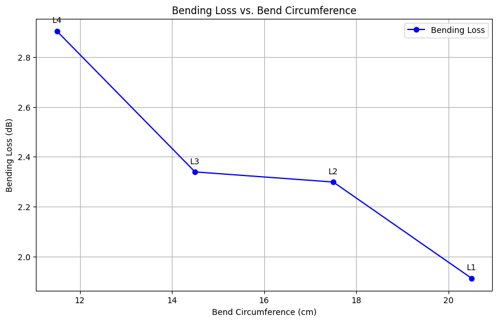
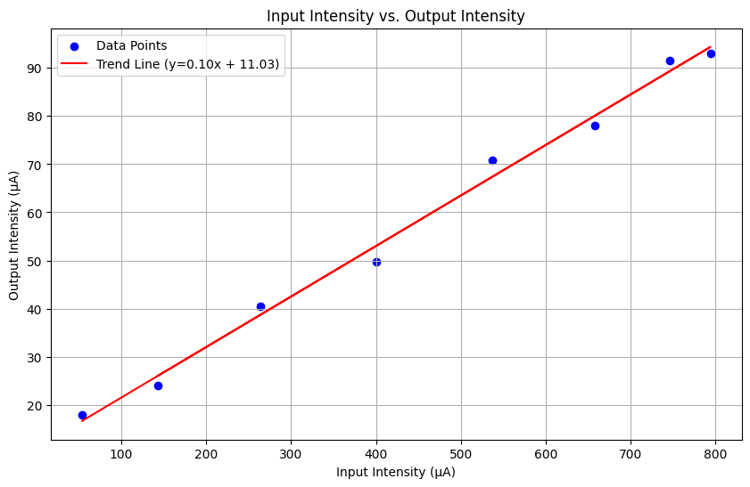

Aim
To quantify the different types of losses in an optical fiber, specifically focusing on:
- Bending losses due to fiber curvature.
- Propagation losses over a fixed fiber length.
- Variations in losses related to changes in input power using a polarizer.
Apparatus
The equipment and materials required for the experiment are:
- Laser Diode
- Bending Loss Apparatus
- Optical Fiber
- Fiber Coupler
- Detector
- Output Measurement Unit
- Polarizer
Theory
Optical fibers experience losses due to bending, propagation, and input power variation. Bending losses occur when light escapes the fiber due to sharp bends, while propagation losses result from scattering and absorption of light as it propagates through the fiber. Input power variation losses are influenced by changes in polarization.
Propagation Loss Formula:
Loss (dB) = 10 log10(Pin / Pout)
Procedure
Step-by-step instructions for the experiment:
- Measuring Bending Losses:
- Connect the laser diode to the fiber coupler and couple the light into the fiber.
- Secure the fiber onto the bending loss apparatus with adjustable curvature.
- Connect the output of the fiber to the detector and output measurement unit.
- Record the initial optical power (without bending) as a reference.
- Change the bend radius on the apparatus, recording the corresponding output power at each bend.
- Repeat the process with different bend radii to observe the relationship between bending curvature and power loss.
- Measuring Propagation Losses:
- Use a fixed length of fiber (60 cm) without any intentional bends.
- Connect the laser to the fiber input and the fiber output to the detector and measurement unit.
- Record the output power for the fixed fiber length.
- Calculate the propagation loss using the formula: Loss (dB) = 10 log(Pin / Pout).
- Measuring Input Power Variation Losses:
- Use a polarizer to adjust the laser diode's output power.
- Connect the fiber to the detector and output measurement unit.
- Rotate the polarizer to vary the input power level from the laser diode.
- Record the corresponding output power for each polarizer position.
- Analyze the data to determine how the losses relate to changes in input power.
Observations
Bending Loss
Bending Loss (dB) vs. Bend Circumference

Figure 1: Bending Loss vs. Bend Circumference
| Level | Circumference (cm) | Output Power (µA) | Bending Loss (dB) |
|---|---|---|---|
| L1 | 20.5 | 23.5 | 1.912250022 |
| L2 | 17.5 | 21.5 | 2.298544045 |
| L3 | 14.5 | 21.3 | 2.33913261 |
| L4 | 11.5 | 18.7 | 2.904512579 |
Propagation Loss
Propagation Loss (dB) for Optical Fiber of Length 60 cm
| Input Current (µA) | Output Current (µA) | Propagation Loss (dB) |
|---|---|---|
| 200 | 36.5 | 7.387371312 |
Varying Power
Output Intensity vs. Polarizer Angle

Figure 2: Varying Power
| Polarizer Angle (°°) | Input Intensity (µA) | Output Intensity (µA) | Laser Angle (°°) | Loss (dB) |
|---|---|---|---|---|
| 330 | 143.2 | 24.0 | 65 | 7.8 |
| 350 | 400.3 | 49.7 | 45 | 9.1 |
| 10 | 657.3 | 78.0 | 25 | 9.3 |
| 30 | 793.9 | 93.0 | 5 | 9.3 |
| 50 | 746.4 | 91.5 | 15 | 9.1 |
| 70 | 537.0 | 70.9 | 35 | 8.8 |
| 90 | 263.6 | 40.5 | 55 | 8.1 |
| 110 | 53.9 | 18.0 | 75 | 4.8 |
Conclusion
- Bending losses increase as the bend radius decreases.
- Propagation losses increase proportionally with fiber length.
- Input power variations affect overall losses in the fiber, as quantified using a polarizer.
- Fiber losses during the experiment may be due to bending, improper coupling, connector losses, polarization changes, scattering, and mechanical disturbances.